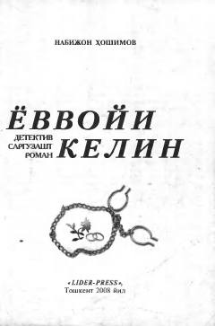

ЁКInson taqdiri, muhabbat va giyohvandlikka qarshi kurashga bag'ishlangan o'tkir сюжетли roman.
Mazkur detektiv sarguzasht roman Sabohat ismli ayolning fojiali va murakkab qismati haqida hikoya qiladi. Asarda yoshlarning sof muhabbatiga qarshilik qiluvchi illatlar, giyohvandlik illatining salbiy oqibatlari hamda unga qarshi kurashish choralari ta'sirli tarzda yoritilgan. Shuningdek, xalq tabobati va sog'lom turmush tarzi g'oyalari ham asarning asosiy mazmunini tashkil etadi.